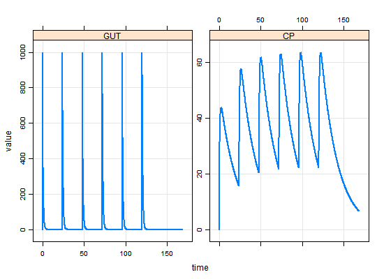
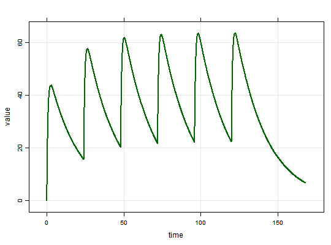
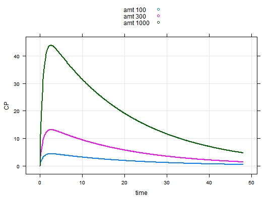
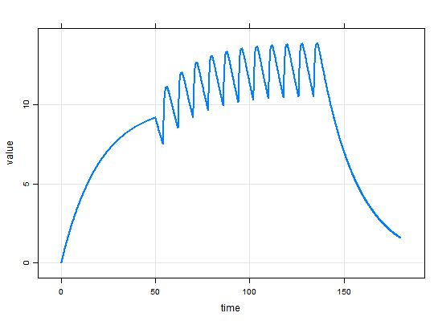
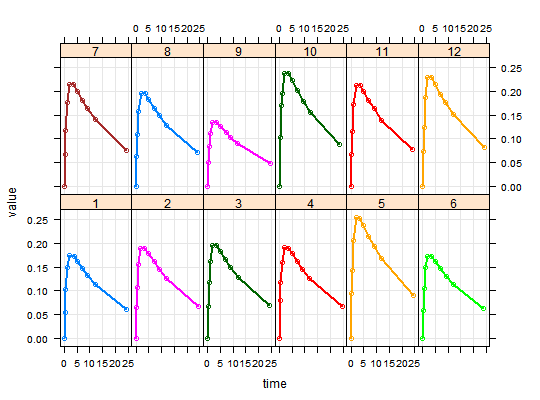
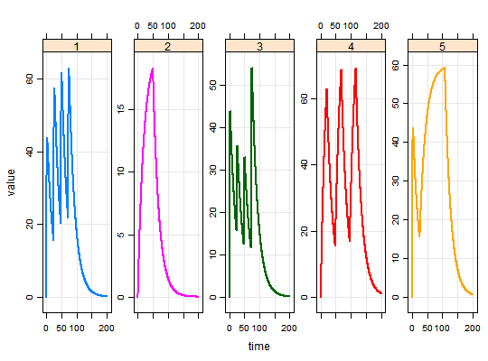
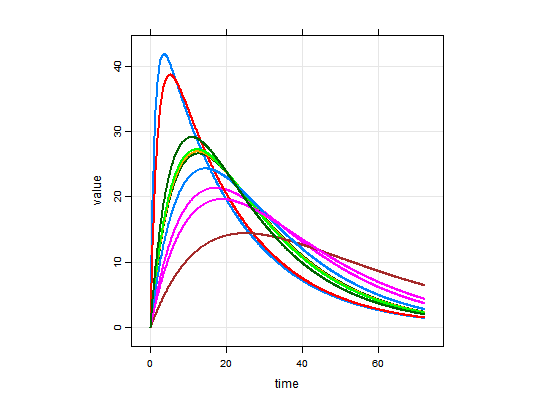

mrgsolve
mrgsolve is an R package maintained under the auspices of Metrum Research Group, LLC, that facilitates simulation from models based on systems of ordinary differential equations (ODE) that are typically employed for understanding pharmacokinetics, pharmacodynamics, and systems biology and pharmacology. mrgsovle consists of computer code written in the R and C++ languages, providing an interface to the DLSODA differential equation solver (written in FORTRAN) provided through ODEPACK - A Systematized Collection of ODE Solvers.
Example models
See mrgsolve_example to export example models into your own, writeable project directory.
Input data sets
See data_set for help creating input data sets. See exdatasets for example input data sets.
Package help
- Package 00Index.html, including a listing of all functions
- Reserved words in
mrgsolve:reserved
About the model object
The model object has class mrgmod.
Handling simulated output
See mrgsims for methods to use with simulated output.
About the solver used by <code>mrgsolve</code>
See: aboutsolver
Examples
#> Warning: cannot open compressed file 'C:\Users\devin\Documents\Repos\mrgsolve/project/housemodel.RDS', probable reason 'No such file or directory'#> Error in gzfile(file, "rb"): cannot open the connection#> Events: #> time cmt amt addl ii evid #> 1 0 1 1000 5 24 1mod#> #> #> -------- mrgsolve model object (windows) -------- #> Project: C:/Users/devin/AppData/Local/Temp/RtmpCUybu4 #> source: demo.cpp #> shared object: demo-so-7dd83012d63 #> #> compile date: #> Time: start: 0 end: 24 delta: 0.1 #> > add: <none> #> > tscale: 1 #> #> Compartments: GUT CENT RESP [3] #> Parameters: TVCL TVVC KA KIN KOUT IC50 [6] #> Omega: 2x2 #> Sigma: 0x0 #> #> Solver: atol: 1e-08 rtol: 1e-08 #> > maxsteps: 2000 hmin: 0 hmax: 0 #>see(mod)#> #> Model file: demo.cpp #> #> $GLOBAL #> #define CP (CENT/VC) #> #define INH (CP/(IC50+CP)) #> #> $SET delta=0.1 #> #> $PARAM TVCL=1, TVVC=20, KA = 1.3, KIN=100, KOUT=2, IC50=10 #> #> $CMT GUT, CENT, RESP #> #> $MAIN #> double CL = exp(log(TVCL) + ETA(1)); #> double VC = exp(log(TVVC) + ETA(2)); #> #> RESP_0 = KIN/KOUT; #> #> $OMEGA 0 0 #> #> $ODE #> dxdt_GUT = -KA*GUT; #> dxdt_CENT = KA*GUT - (CL/VC)*CENT; #> dxdt_RESP = KIN*(1-INH) - KOUT*RESP; #> #> $CAPTURE CP #>? stime(mod)#>param(mod)#> #> Model parameters (N=6): #> name value . name value #> IC50 10 | KOUT 2 #> KA 1.3 | TVCL 1 #> KIN 100 | TVVC 20init(mod)#> #> Model initial conditions (N=3): #> name value . name value #> CENT (2) 0 | RESP (3) 50 #> GUT (1) 0 | . ... .#> Model: demo.cpp #> Dim: 1682 x 6 #> Time: 0 to 168 #> ID: 1 #> ID time GUT CENT RESP CP #> [1,] 1 0.0 0.0 0.0 50.00 0.00 #> [2,] 1 0.0 1000.0 0.0 50.00 0.00 #> [3,] 1 0.1 878.1 121.6 47.92 6.08 #> [4,] 1 0.2 771.1 227.8 44.07 11.39 #> [5,] 1 0.3 677.1 320.4 39.90 16.02 #> [6,] 1 0.4 594.5 401.1 35.89 20.06 #> [7,] 1 0.5 522.0 471.4 32.23 23.57 #> [8,] 1 0.6 458.4 532.5 28.96 26.63head(out)#> Model: demo#> ID time GUT CENT RESP CP #> 1 1 0.0 0.0000 0.0000 50.00000 0.000000 #> 2 1 0.0 1000.0000 0.0000 50.00000 0.000000 #> 3 1 0.1 878.0954 121.5937 47.92446 6.079687 #> 4 1 0.2 771.0516 227.7582 44.06937 11.387909 #> 5 1 0.3 677.0569 320.3773 39.89587 16.018863 #> 6 1 0.4 594.5205 401.1053 35.88915 20.055263tail(out)#> Model: demo#> ID time GUT CENT RESP CP #> 1677 1 167.5 1.518079e-24 138.3258 29.25390 6.916289 #> 1678 1 167.6 1.331589e-24 137.6359 29.31456 6.881794 #> 1679 1 167.7 1.168353e-24 136.9494 29.37516 6.847471 #> 1680 1 167.8 1.025572e-24 136.2664 29.43571 6.813319 #> 1681 1 167.9 9.000213e-25 135.5868 29.49621 6.779338 #> 1682 1 168.0 7.895128e-25 134.9105 29.55665 6.745526dim(out)#> [1] 1682 6#> #> #> -------- mrgsolve model object (windows) -------- #> Project: C:/Users/devin/AppData/Local/Temp/RtmpCUybu4 #> source: demo.cpp #> shared object: demo-so-7dd83012d63 #> #> compile date: #> Time: start: 0 end: 168 delta: 0.1 #> > add: <none> #> > tscale: 1 #> #> Compartments: GUT CENT RESP [3] #> Parameters: TVCL TVVC KA KIN KOUT IC50 [6] #> Omega: 2x2 #> Sigma: 0x0 #> #> Solver: atol: 1e-08 rtol: 1e-08 #> > maxsteps: 2000 hmin: 0 hmax: 0 #>param(out)#> #> Model parameters (N=6): #> name value . name value #> IC50 10 | KOUT 2 #> KA 1.3 | TVCL 1 #> KIN 100 | TVVC 20plot(out, GUT+CP~.)sims <- as.data.frame(out) t72 <- subset(sims, time==72) str(t72)#> 'data.frame': 1 obs. of 6 variables: #> $ ID : num 1 #> $ time: num 72 #> $ GUT : num 1000 #> $ CENT: num 436 #> $ RESP: num 15.5 #> $ CP : num 21.8idata <- data.frame(ID=c(1,2,3), CL=c(0.5,1,2),VC=12) out <- mod %>% ev(events) %>% mrgsim(end=168, idata=idata, req="") plot(out)#> Model: demo#> ID time evid amt cmt GUT CENT RESP CP #> 1 1 0.0 0 0 0 0.0000 0.0000 50.00000 0.000000 #> 2 1 0.0 1 1000 1 1000.0000 0.0000 50.00000 0.000000 #> 3 1 0.1 0 0 0 878.0954 121.5937 47.92446 6.079687 #> 4 1 0.2 0 0 0 771.0516 227.7582 44.06937 11.387909 #> 5 1 0.3 0 0 0 677.0569 320.3773 39.89587 16.018863 #> 6 1 0.4 0 0 0 594.5205 401.1053 35.88915 20.055263out <- mod %>% ev() %>% knobs(CL=c(0.5, 1,2), amt=c(100,300,1000), cmt=1,end=48) plot(out, CP~., scales="same")plot(out, RESP+CP~time|amt,groups=CL)#> Error in eval(expr, envir, enclos): object 'CL' not foundev1 <- ev(amt=500, cmt=2,rate=10) ev2 <- ev(amt=100, cmt=1, time=54, ii=8, addl=10) events <- ev1+ev2 events#> Events: #> time cmt amt rate evid ii addl #> 1 0 2 500 10 1 0 0 #> 2 54 1 100 0 1 8 10## Full NMTRAN data set data(exTheoph) head(exTheoph)#> ID WT Dose time conc cmt amt evid #> 1 1 79.6 4.02 0.00 0.00 1 4.02 1 #> 2 1 79.6 4.02 0.25 2.84 0 0.00 0 #> 3 1 79.6 4.02 0.57 6.57 0 0.00 0 #> 4 1 79.6 4.02 1.12 10.50 0 0.00 0 #> 5 1 79.6 4.02 2.02 9.66 0 0.00 0 #> 6 1 79.6 4.02 3.82 8.58 0 0.00 0#> Warning: cannot open compressed file 'C:\Users\devin\Documents\Repos\mrgsolve/project/housemodel.RDS', probable reason 'No such file or directory'#> Error in gzfile(file, "rb"): cannot open the connection## "Condensed" data set data(extran1) extran1#> ID amt cmt time addl ii rate evid #> 1 1 1000 1 0 3 24 0 1 #> 2 2 1000 2 0 0 0 20 1 #> 3 3 1000 1 0 0 0 0 1 #> 4 3 500 1 24 0 0 0 1 #> 5 3 500 1 48 0 0 0 1 #> 6 3 1000 1 72 0 0 0 1 #> 7 4 2000 2 0 2 48 100 1 #> 8 5 1000 1 0 0 0 0 1 #> 9 5 5000 1 24 0 0 60 1## idata data(exidata) exidata#> ID CL VC KA KOUT IC50 FOO #> 1 1 1.050 47.80 0.8390 2.450 1.280 4 #> 2 2 0.730 30.10 0.0684 2.510 1.840 6 #> 3 3 2.820 23.80 0.1180 3.880 2.480 5 #> 4 4 0.552 26.30 0.4950 1.180 0.977 2 #> 5 5 0.483 4.36 0.1220 2.350 0.483 10 #> 6 6 3.620 39.80 0.1260 1.890 4.240 1 #> 7 7 0.395 12.10 0.0317 1.250 0.802 8 #> 8 8 1.440 31.20 0.0931 4.030 1.310 7 #> 9 9 2.570 18.20 0.0570 0.862 1.950 3 #> 10 10 2.000 6.51 0.1540 3.220 0.699 9out <- mod %>% ev(amt=1000, cmt=1) %>% idata_set(exidata) %>% mrgsim(end=72) plot(out, CP~., as="log10")code <- ' $PARAM CL=1, VC=10, KA=1.1 $INIT GUT=0, CENT=0 $SET end=48, delta=0.25 $MAIN double CLi = CL*exp(ETA(1)); double VCi = VC*exp(ETA(2)); double ke = CLi/VCi; $OMEGA @correlation 0.04 0.6 0.09 $ODE dxdt_GUT = -KA*GUT; dxdt_CENT = KA*GUT - ke*CENT; $TABLE double CP = CENT/VCi; $CAPTURE CP ' mod <- mcode("package_example",code) %>% ev(amt=1000, cmt=1, addl=2, ii=8)#> Warning: path[1]="C:\Users\devin\Documents\Repos\mrgsolve/base": The system cannot find the file specified#>#> c:/Rtools/mingw_64/bin/g++ -I"C:/PROGRA~1/R/R-33~1.2/include" -DNDEBUG -I"C:/Users/devin/Documents/Repos/mrgsolve/base" -I"C:/Users/devin/AppData/Local/Temp/RtmpCUybu4" -I"d:/Compiler/gcc-4.9.3/local330/include" -O2 -Wall -mtune=core2 -c package_example-mread-source.cpp -o package_example-mread-source.o #> package_example-mread-source.cpp:13:25: fatal error: modelheader.h: No such file or directory #> #include "modelheader.h" #> ^ #> compilation terminated. #> make: *** [package_example-mread-source.o] Error 1 #> Warning message: #> running command 'make -f "C:/PROGRA~1/R/R-33~1.2/etc/x64/Makeconf" -f "C:/PROGRA~1/R/R-33~1.2/share/make/winshlib.mk" SHLIB_LDFLAGS='$(SHLIB_CXXLDFLAGS)' SHLIB_LD='$(SHLIB_CXXLD)' SHLIB="package_example-mread-source.dll" WIN=64 TCLBIN=64 OBJECTS="package_example-mread-source.o"' had status 2 #> #>#> Error: There was a problem when compiling the model. c:/Rtools/mingw_64/bin/g++ -I"C:/PROGRA~1/R/R-33~1.2/include" -DNDEBUG -I"C:/Users/devin/Documents/Repos/mrgsolve/base" -I"C:/Users/devin/AppData/Local/Temp/RtmpCUybu4" -I"d:/Compiler/gcc-4.9.3/local330/include" -O2 -Wall -mtune=core2 -c package_example-mread-source.cpp -o package_example-mread-source.oThere was a problem when compiling the model. package_example-mread-source.cpp:13:25: fatal error: modelheader.h: No such file or directoryThere was a problem when compiling the model. #include "modelheader.h"There was a problem when compiling the model. ^There was a problem when compiling the model. compilation terminated.There was a problem when compiling the model. make: *** [package_example-mread-source.o] Error 1There was a problem when compiling the model. Warning message:There was a problem when compiling the model. running command 'make -f "C:/PROGRA~1/R/R-33~1.2/etc/x64/Makeconf" -f "C:/PROGRA~1/R/R-33~1.2/share/make/winshlib.mk" SHLIB_LDFLAGS='$(SHLIB_CXXLDFLAGS)' SHLIB_LD='$(SHLIB_CXXLD)' SHLIB="package_example-mread-source.dll" WIN=64 TCLBIN=64 OBJECTS="package_example-mread-source.o"' had status 2out <- mod %>% mrgsim out#> Model: demo.cpp #> Dim: 241 x 6 #> Time: 0 to 24 #> ID: 1 #> ID time GUT CENT RESP CP #> [1,] 1 0.0 0 0 50 0 #> [2,] 1 0.1 0 0 50 0 #> [3,] 1 0.2 0 0 50 0 #> [4,] 1 0.3 0 0 50 0 #> [5,] 1 0.4 0 0 50 0 #> [6,] 1 0.5 0 0 50 0 #> [7,] 1 0.6 0 0 50 0 #> [8,] 1 0.7 0 0 50 0plot(out)#> Error: project directory must exist and be readable.mod#> #> #> -------- mrgsolve model object (windows) -------- #> Project: C:/Users/devin/AppData/Local/Temp/RtmpCUybu4 #> source: demo.cpp #> shared object: demo-so-7dd83012d63 #> #> compile date: #> Time: start: 0 end: 24 delta: 0.1 #> > add: <none> #> > tscale: 1 #> #> Compartments: GUT CENT RESP [3] #> Parameters: TVCL TVVC KA KIN KOUT IC50 [6] #> Omega: 2x2 #> Sigma: 0x0 #> #> Solver: atol: 1e-08 rtol: 1e-08 #> > maxsteps: 2000 hmin: 0 hmax: 0 #>#> Model: demo.cpp #> Dim: 242 x 6 #> Time: 0 to 24 #> ID: 1 #> ID time GUT CENT RESP CP #> [1,] 1 0.0 0.0 0.00 50.00 0.000 #> [2,] 1 0.0 300.0 0.00 50.00 0.000 #> [3,] 1 0.1 263.4 36.48 49.22 1.824 #> [4,] 1 0.2 231.3 68.33 47.47 3.416 #> [5,] 1 0.3 203.1 96.11 45.27 4.806 #> [6,] 1 0.4 178.4 120.33 42.94 6.017 #> [7,] 1 0.5 156.6 141.42 40.62 7.071 #> [8,] 1 0.6 137.5 159.76 38.42 7.988